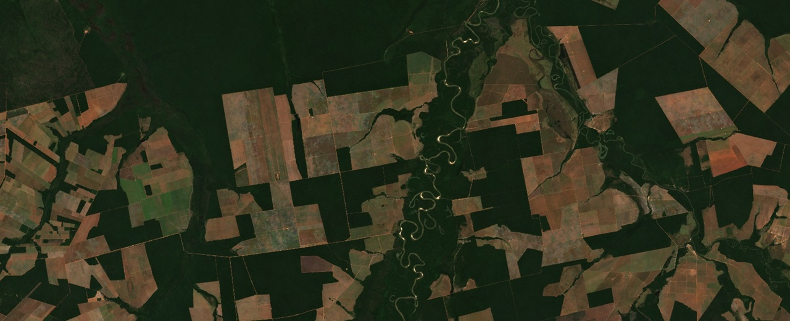

EUDR Compliance
Streamline data management and deforestation analysis across your supply chain with cost-effective geospatial solutions.
Data Collection & Supplier Support
Reliable, georeferenced plot data is the foundation of EUDR compliance. I assist suppliers in selecting appropriate tools, meeting quality requirements, and ensuring accurate geospatial documentation. When needed, I provide hands-on training and support to optimize data collection.
Data Processing & Quality Assurance
Geolocated plot data often arrives in diverse formats with varying accuracy. I support with database management, automate format conversions (GeoJSON, SHP, KML, etc.), and ensure data quality compliance (coordinate validation, geometric error correction, decimal precision, etc). My automated script-based workflows reduce processing time and minimize human error, ensuring that data is structured correctly for prior to EU submission.
Data Visualization & Reporting
I provide interactive web-based maps that allow stakeholders to visualize their supply chain, track deforestation analysis progress and communicate with suppliers about geolocation issues. By integrating real-time spatial data, I ensure that all supply chain actors have a clear and accessible view of their compliance status.
Deforestation Monitoring & Risk Assessment
I offer a tailored, multi-tiered approach to deforestation assessment, balancing accuracy, cost, and efficiency while aligning with EUDR regulatory standards.
Deforstation Detection
To verify negligible risk of deforestation since the December 31, 2020 cut-off date, I conduct geospatial analysis using the best freely available forest cover datasets, including:
- Hansen Global Forest Change
- Tropical Moist Forest Data
- EU 2020 Forest Cover
A combination of these datasets, along with other relevant forest data, often provides a reliable foundation for demonstrating negligible deforestation risk. This approach helps reduce the need for manual inspections or custom dataset generation, optimizing both cost and accuracy.
See this web viewer for a forest cover data comparison: Forest Map Comparison
Refining Results
If negligible risk cannot be fully documented using existing forest cover data and automated analysis, additional verification steps can be applied, including:
- Manual inspection using Planet, Sentinel-2, or WorldView imagery for high-resolution validation.
- AI-powered land cover classification to refine forest cover accuracy for your specific region.
Special Considerations for Timber
Unlike agricultural crops, timber harvesting inherently results in forest loss. To achieve compliance, operators and traders must provide evidence of forest regeneration plans from the place of harvest such as :
- Forest Management Plans
- Forest Certification
- Satellite or ground-based imagery
Several question need to be answered to reach compliance, some of which can be supported by geospatial data and analysis:
- What was the original forest type? The required restoration depends on the previous forest type, which can be verified through compliance records or remote sensing.
- What is the replanting plan? If full reforestation has not yet occurred, compliance may be based on approved regeneration plans.
- What do satellite and georeferenced images show? Monitoring actual replanting efforts strengthens documentation.
- What is the general risk level in the area? Risk-based documentation varies by region, and local deforestation patterns help confirm compliance or highlight priority areas.
I help identify the most suitable geospatial data to streamline compliance documentation. By integrating automated screening, manual verification, and customized compliance strategies, I provide a cost-effective and scalable solution for EUDR compliance—ensuring transparency and sustainability across your supply chain.
Data Integration with EU Traces
Once verified, compliance data is exported in the required GeoJSON format and submitted to EU TRACES—either manually or via API integration. My automated workflows reduce the risk of data formatting errors and ensure smooth regulatory submission. I also provide support with API integration streamlined uploads and guidance on data formate requirements.
Why Choose My EUDR Compliance Service?
By combining cutting-edge geospatial analytics, AI-driven deforestation screening, and scalable automation, my service provides a cost-effective, transparent, and regulatory-ready solution for EUDR compliance. I help you mitigate risk, streamline compliance processes, and enhance sustainability across your supply chain.